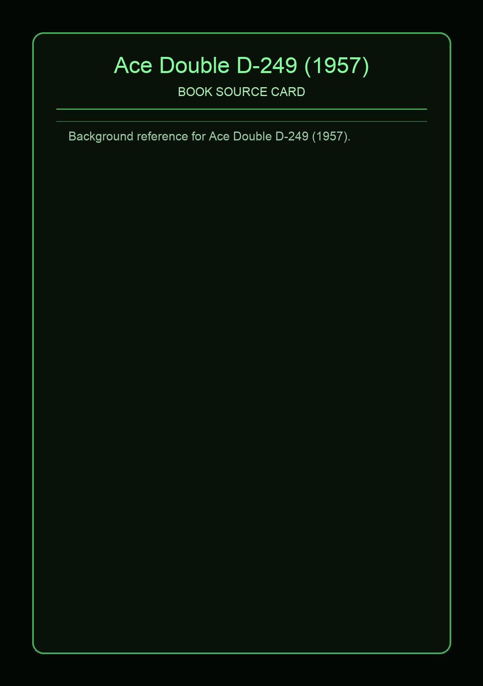

Ace Double D-249 (1957)
Source Card

A-side: The Cosmic Puppets (Philip K. Dick). B-side: Sargasso of Space (Andre Norton). This Ace code uses the dos-a-dos format, so each narrative gets its own front-cover orientation in one physical paperback [1][2].
D-249 joins metaphysical horror with space-trade adventure. In The Cosmic Puppets, Ted Barton returns to Millgate and finds reality rewritten around a conflict tied to Ahriman and Ormazd, with Doctor Meade, Mary, and Peter Trilling as key local figures [3].
Covers and Context


Sargasso of Space follows Dane Thorson and the Solar Queen crew through pirate attack, Forerunner machinery, and survival by tactical improvisation. The result is a double with sharply different pacing but strong shared tension around unstable environments [4].
External Links
Facts are synthesized in original wording from direct references listed above.